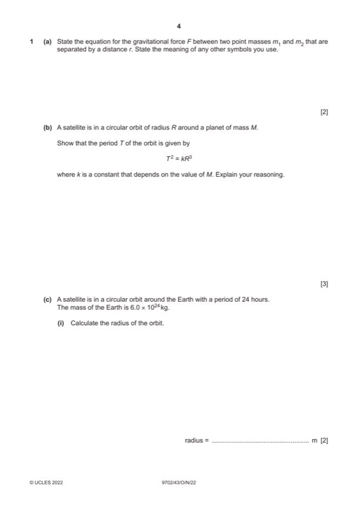
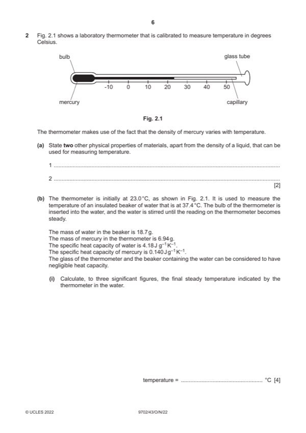
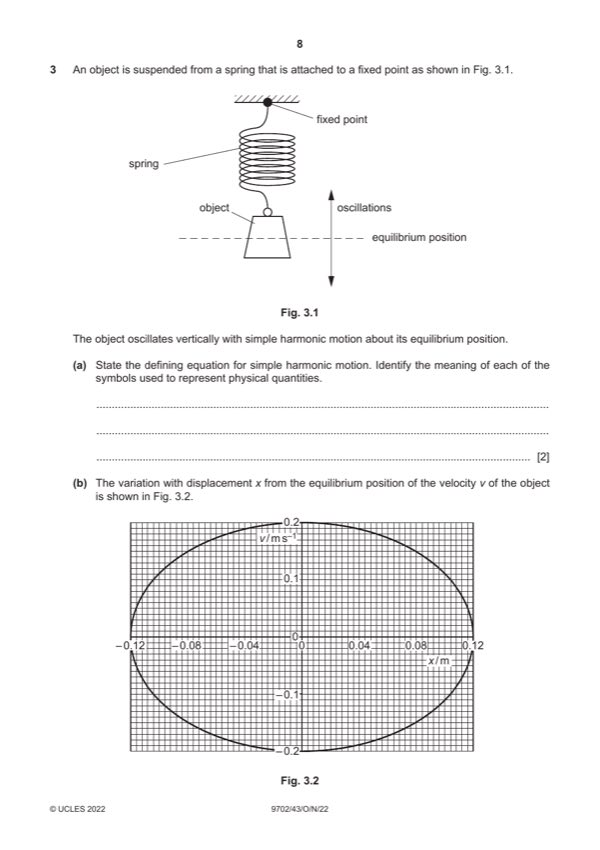
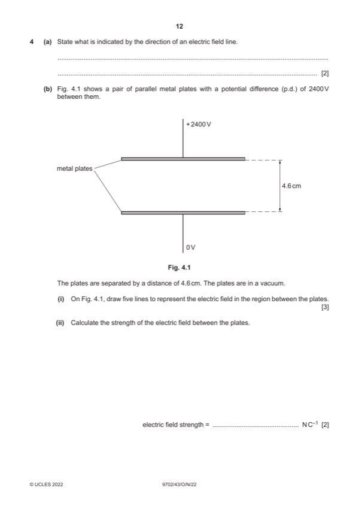
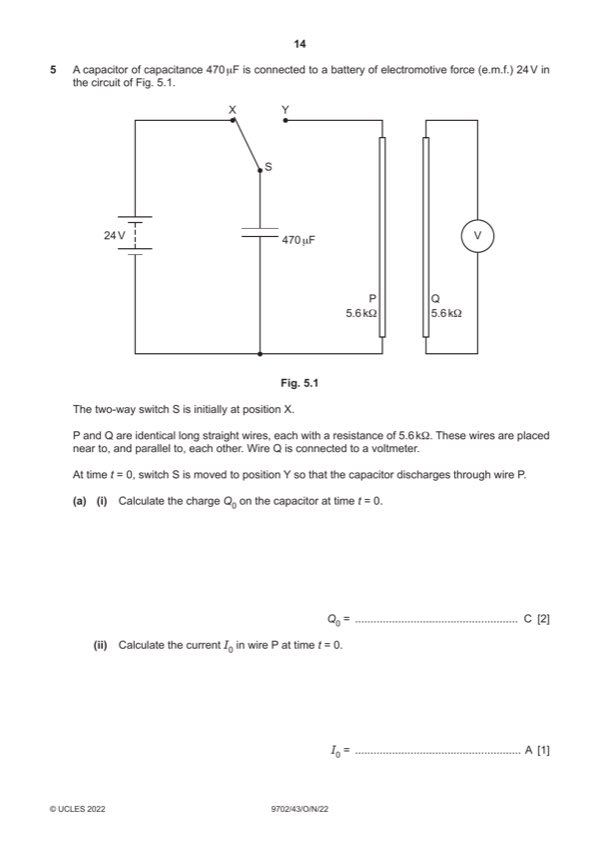
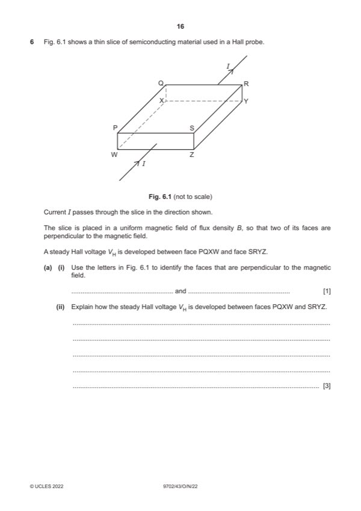
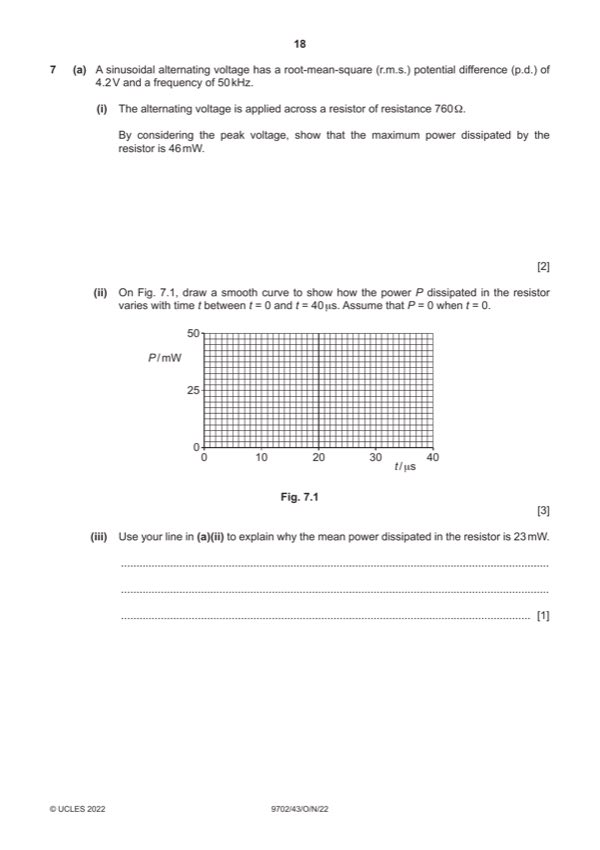
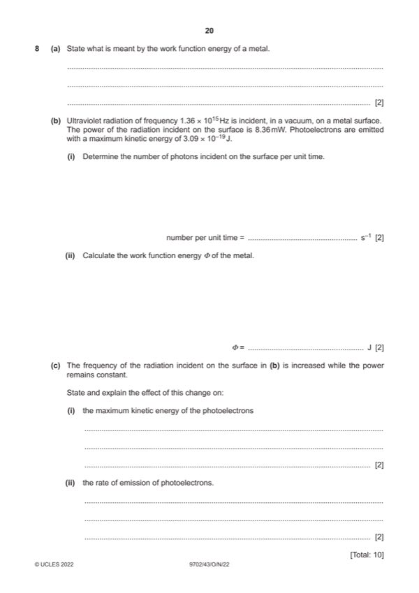
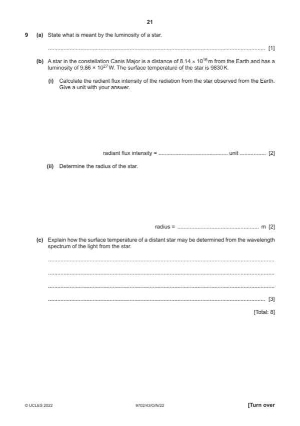
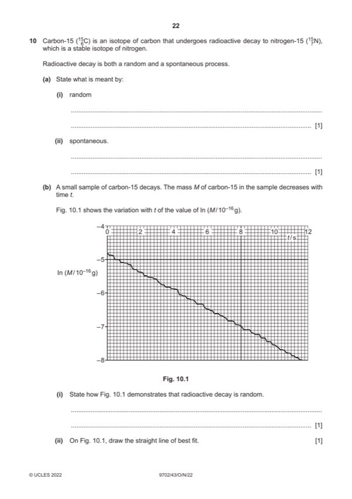

Question 0
Part 0 — solution
- [B1] Obtain/use: °C is not absolute zero
Mark points
- [B1] Obtain/use: °C is not absolute zero
Step-by-step solutions based on the mark scheme (not a mark-scheme dump).
Part 0 — solution

Part 1(a) — solution
Part 1(b) — solution
Part 1(c)(i) — solution
Part 1(c)(ii) — solution

Part 2(a) — solution
Part 2(b)(i) — solution
Part 2(b)(ii) — solution
Part 2(c)(i) — solution
Part 2(c)(ii) — solution

Part 3(a) — solution
Part 3(b)(i) — solution
Part 3(b)(ii) — solution
Part 3(b)(iii) — solution
Part 3(c)(i) — solution
Part 3(c)(ii) — solution

Part 4(a) — solution
Part 4(b)(i) — solution
Part 4(b)(ii) — solution
Part 4(c)(i) — solution
Part 4(c)(ii) — solution

Part 5(a)(i) — solution
Part 5(a)(ii) — solution
Part 5(a)(iii) — solution
Part 5(a)(iv) — solution
Part 5(b)(i) — solution
Part 5(b)(ii) — solution

Part 6(a)(i) — solution
Part 6(a)(ii) — solution
Part 6(b)(i) — solution
Part 6(b)(ii) — solution

Part 7(a)(i) — solution
Part 7(a)(ii) — solution
Part 7(a)(iii) — solution
Part 7(b)(i) — solution
Part 7(b)(ii) — solution

Part 8(a) — solution
Part 8(b)(i) — solution
Part 8(b)(ii) — solution
Part 8(c)(i) — solution
Part 8(c)(ii) — solution

Part 9(a) — solution
Part 9(b)(i) — solution
Part 9(b)(ii) — solution
Part 9(c) — solution

Part 10(a)(i) — solution
Part 10(a)(ii) — solution
Part 10(b)(i) — solution
Part 10(b)(ii) — solution
Part 10(b)(iii) — solution
Part 10(b)(iv) — solution
Part 10(b)(v) — solution
Part 10(c) — solution